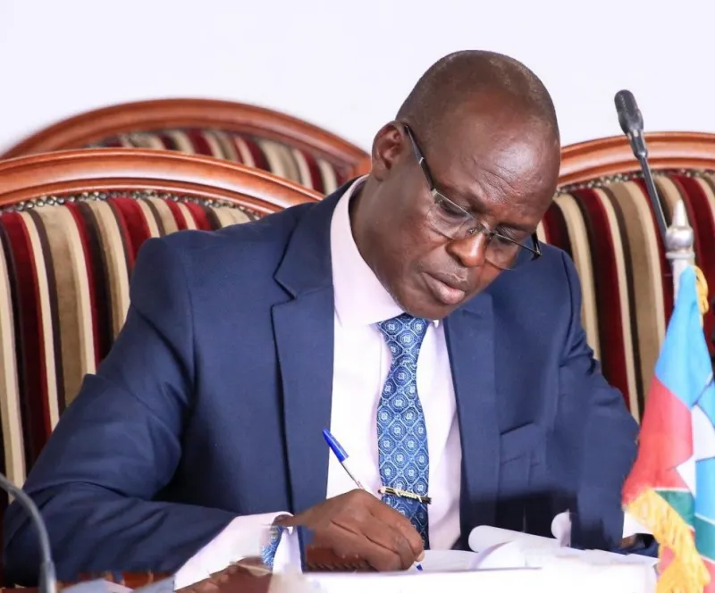
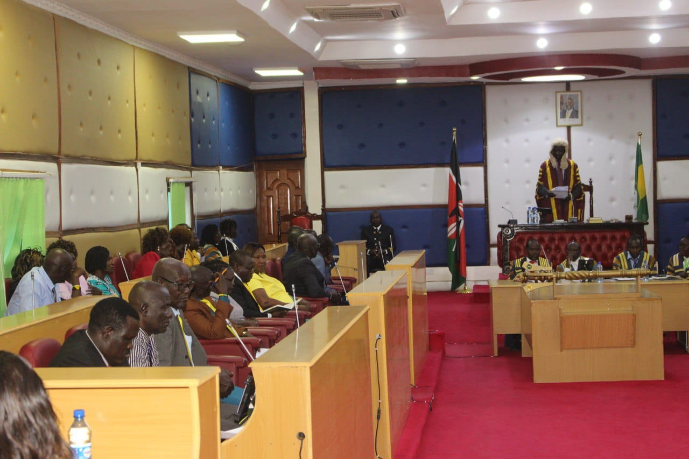

Cabinet Members

HE Hon. Jeremiah Lomorukai Ekamais
Governor of Turkana County

H.E Dr. John Erus Lopeyok
Deputy Governor
Speaker Rt. Hon. Christopher Nakuleu
Speaker of the County Assembly

Members of Turkana County Assembly
Members of the County Assembly